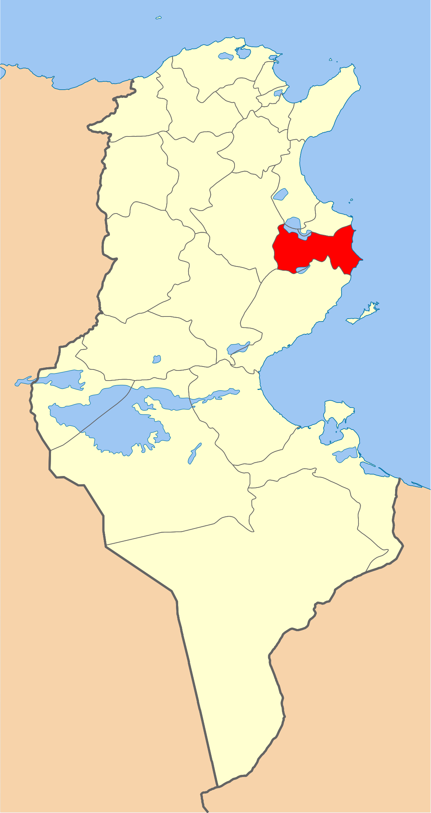
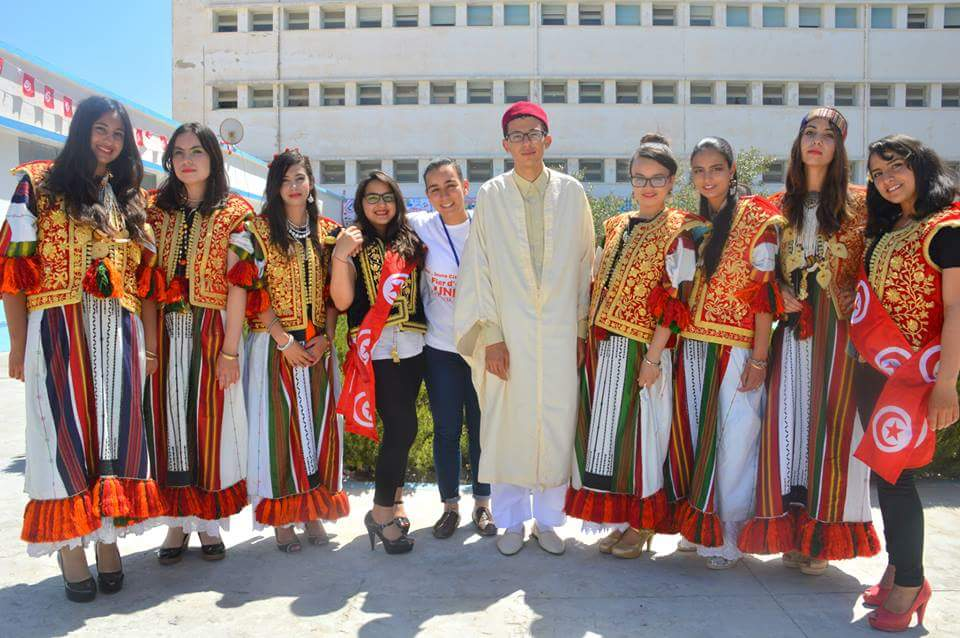
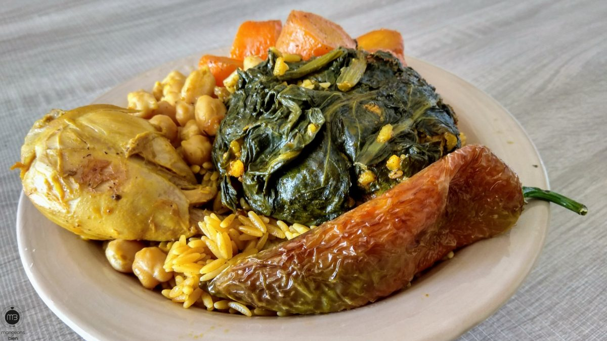
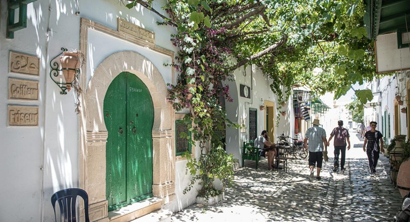
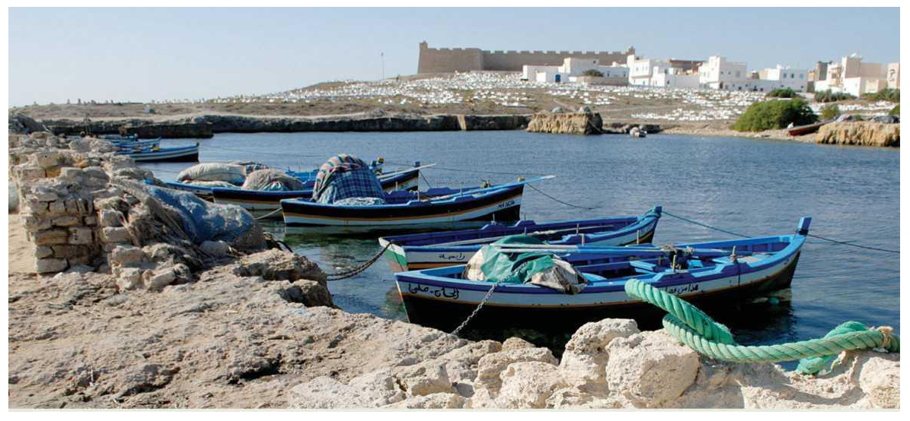

Mahdia
Localisé au cœur de la grande région du Sahel tunisien, le gouvernorat de Mahdia ouvre sur le bassin oriental de la méditerranée avec un littoral de plus de 75 km de longueur.
Médina de Mehdia
Mosquée Hadj MUSTAPHA
Notre Dame du Mont Carmel
Amphithéâtre El Djem
Quelques chiffres
Superficie
2 878 km²
Nombre de maisons
44 000
Habitants
410 812
Localisation
Situé à 105 kilomètres de la capitale, le gouvernorat de Béja constitue une zone de liaison géographique entre les gouvernorats voisins. Il est délimité par la mer Méditerranée (26 kilomètres de littoral au nord), le gouvernorat de Bizerte au nord-est, le gouvernorat de la Manouba à l'est, le gouvernorat de Zaghouan au sud-est, le gouvernorat de Siliana au sud et le gouvernorat de Jendouba à l'ouest.

Histoire
L'année 916 voit l'arrivée du premier calife fatimide Ubayd Allah al-Mahdi qui ordonne la fondation de Mahdia, dont la construction s'étale sur cinq ans, et qui lui donne son nom actuel. La ville devient ainsi la capitale des Fatimides en 921 et le reste jusqu'en 973, date à laquelle Mahdia est remplacée par Le Caire. Assiégée durant huit mois (944-945) par les kharidjites sous la conduite de leur chef Abu Yazid, la ville résiste victorieusement. En 1057, les Zirides s'y réfugient face à la menace des Hilaliens. En 1086-1087, pour faire cesser les attaques répétées des corsaires de cette région, notamment celles orchestrées par le souverain ziride Tamim (1062-1108), les grandes villes marchandes du nord du bassin méditerranéen — Gênes, Pise, Amalfi, Salerne et Gaète — arment des bâtiments et s'emparent de Mahdia.

Culture

hover me
hover me
hover me
hover me